Portfolio — 2026
Shanghai, CN
雷啟春
工业设计/产品建模与渲染
上海电机学院工业设计专业，大二在读。这一年做了两件事：把一个智能眼镜方案从草图推到场景渲染；把 30 多件产品的建模与渲染练了一遍。
正在找工业设计 / 产品设计的实习机会。
- 独立完成项目
- 1个
- 产品练习
- 30+
- GPA
- 3.66前 10%
01项目
草图 → 结构 → 建模 → 渲染 → 场景
轻量化消费级 AI 眼镜
Lightweight Consumer AI Glasses · 2026
一副给日常戴的 AI 眼镜。核心不是把功能堆上去，而是让它看起来像一副普通眼镜——设计理念是「无感融合」：轻量化、日常化、温润感、科技感，四条线要同时成立。
结构上把电池和计算单元从镜框挪到耳后，重心后移，减少鼻梁压力；镜腿做成左右功能分区的模块化结构，方便维修、升级和换色。CMF 用奶油白 / 暖沙打底，焦糖棕做季节限定，再加一点木制纹理压住数码感。
草图阶段先把尺寸定死——镜腿 4mm / 2.5mm 厚、总宽 135mm、镜片倾角 20°，再进 Rhino 建曲面，最后渲染、排版。
- 01重心失衡
前重后轻，长时间佩戴压鼻梁。
- 02外观同质
数码感太强，难融入日常穿搭。
- 03贴合不足
没有针对亚洲脸型做人体工学优化。
- 04配镜困难
近视人群难以适配，影响核心用户。
草图 / 尺寸推导
镜腿厚度、铰链分件、扬声器孔排布都在手绘阶段先定下来。
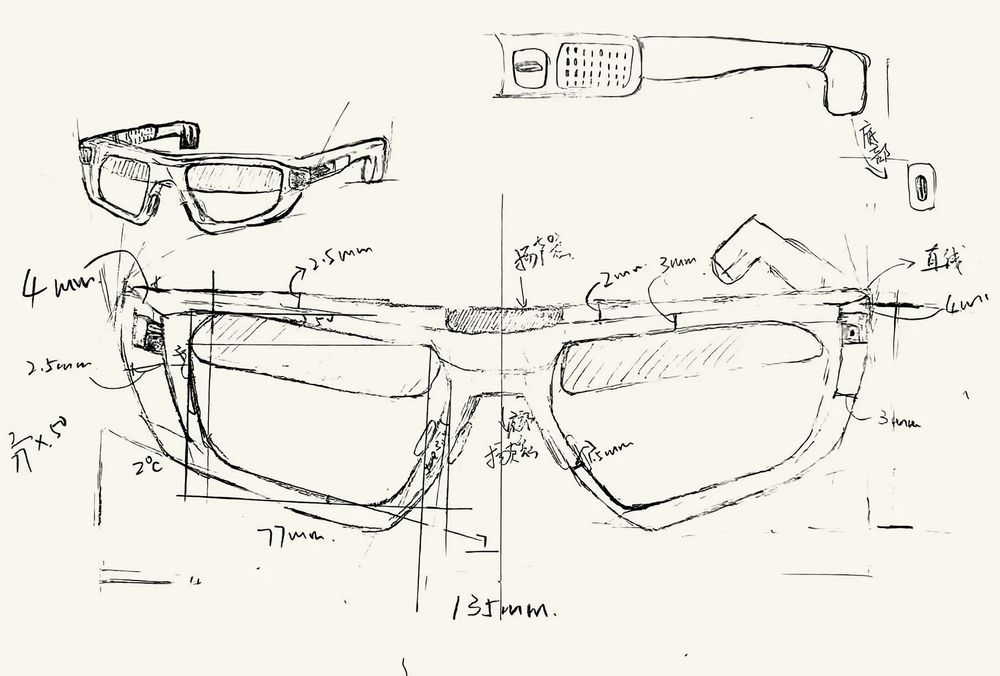
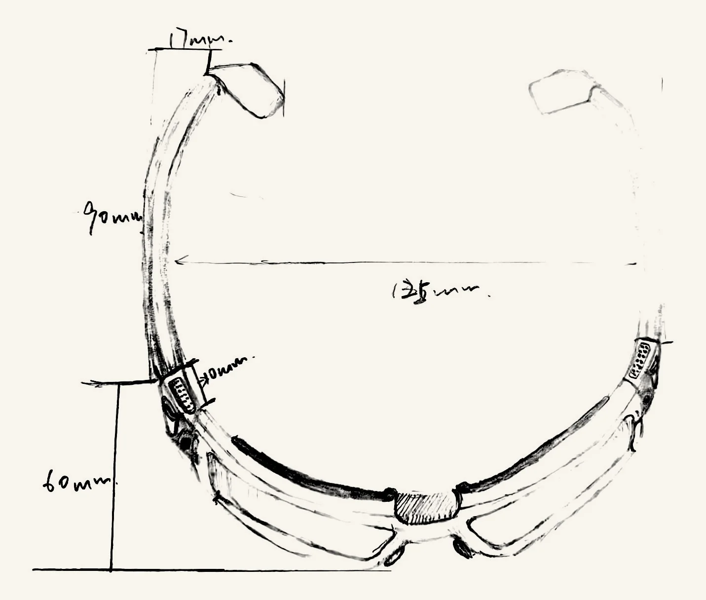
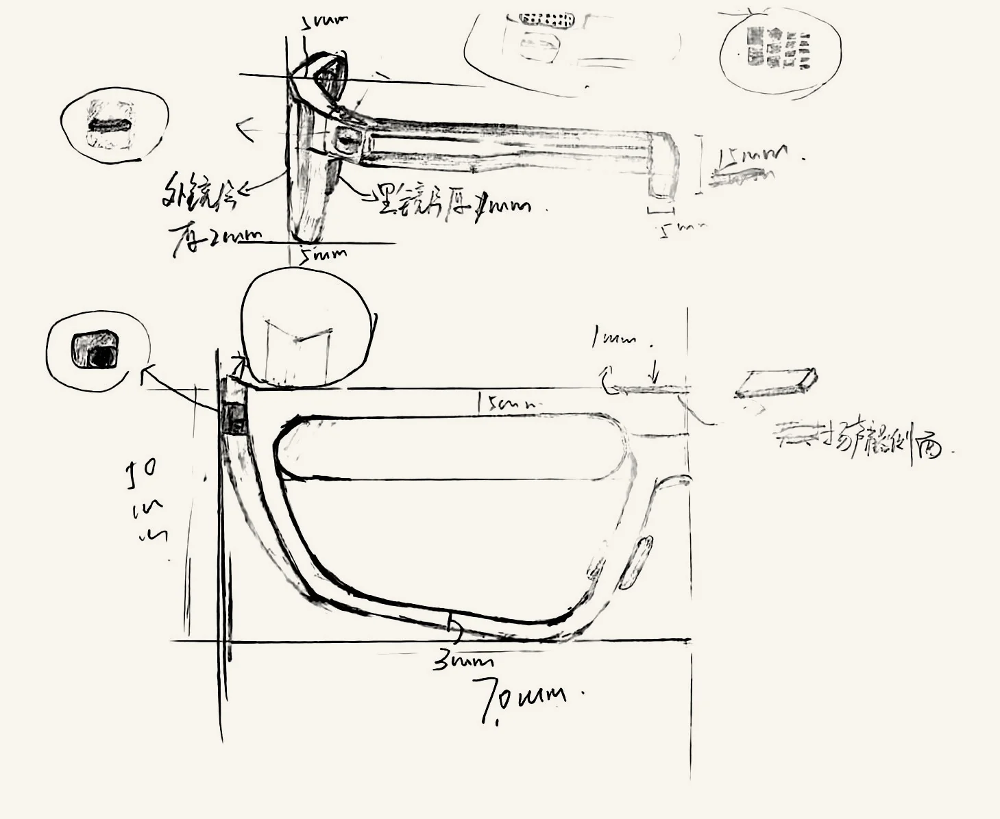
结构 / 正投影校核
用正投影检查轮廓和比例，确认镜框到镜腿的过渡没有塌陷。
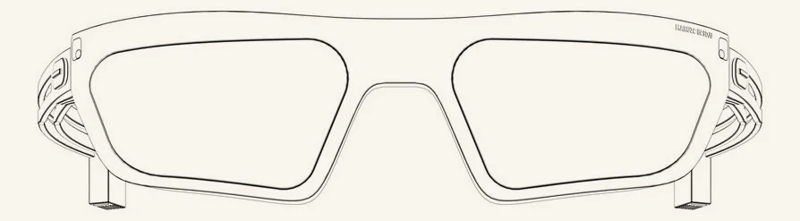
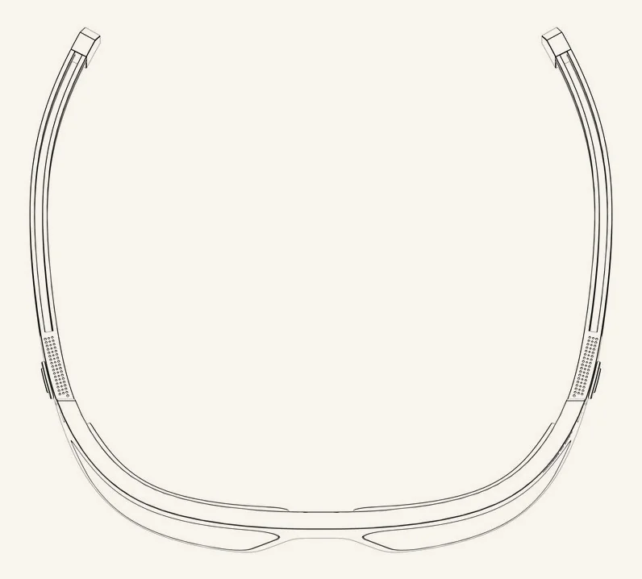
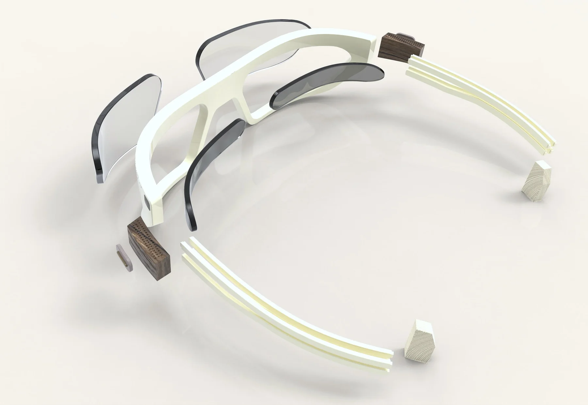
渲染
米白尼龙 + 深色镜片 + 木纹电子仓，三种材质在同一件产品上。
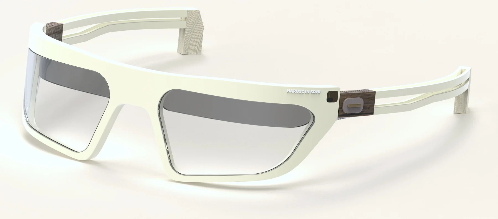
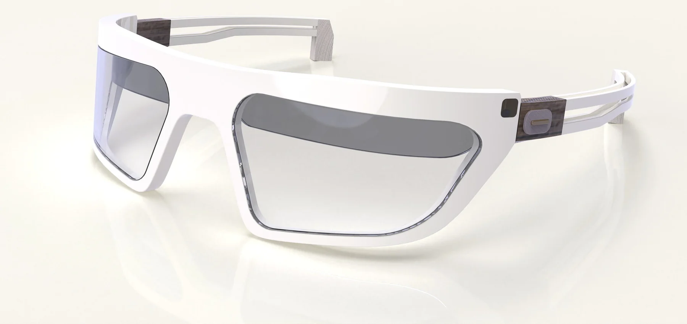
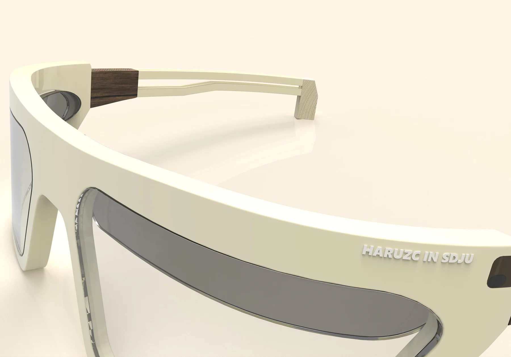
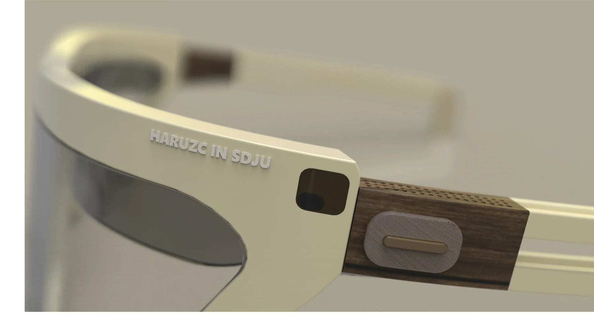
场景
用 AI 生成环境，再把模型放进去——验证的是比例和使用语境。
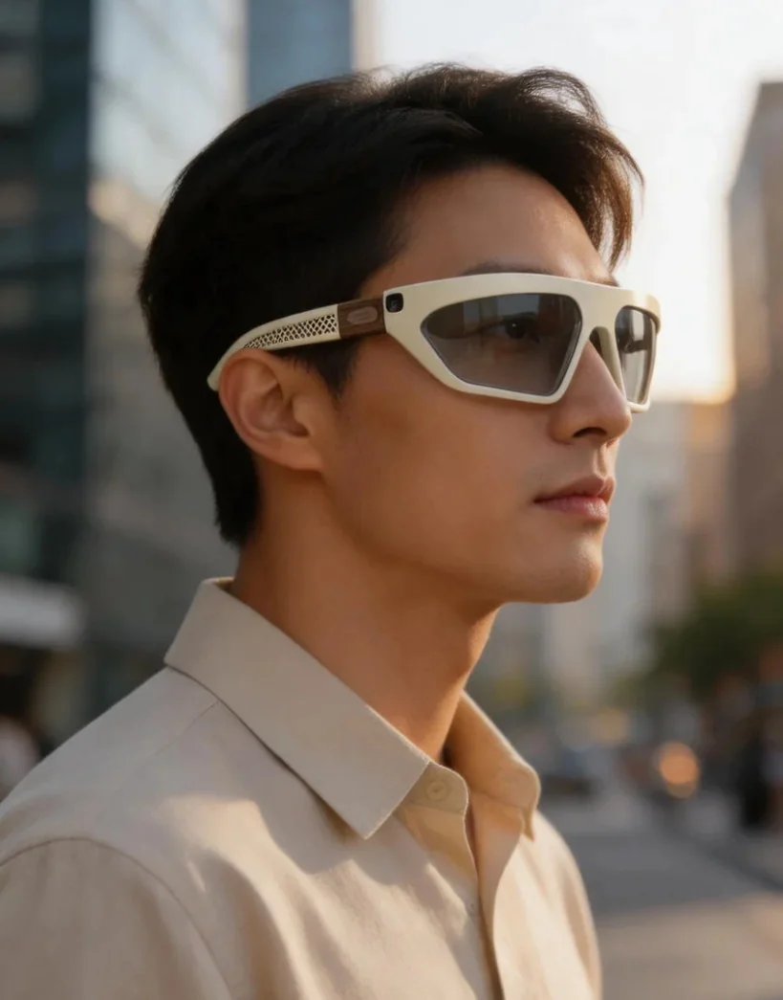
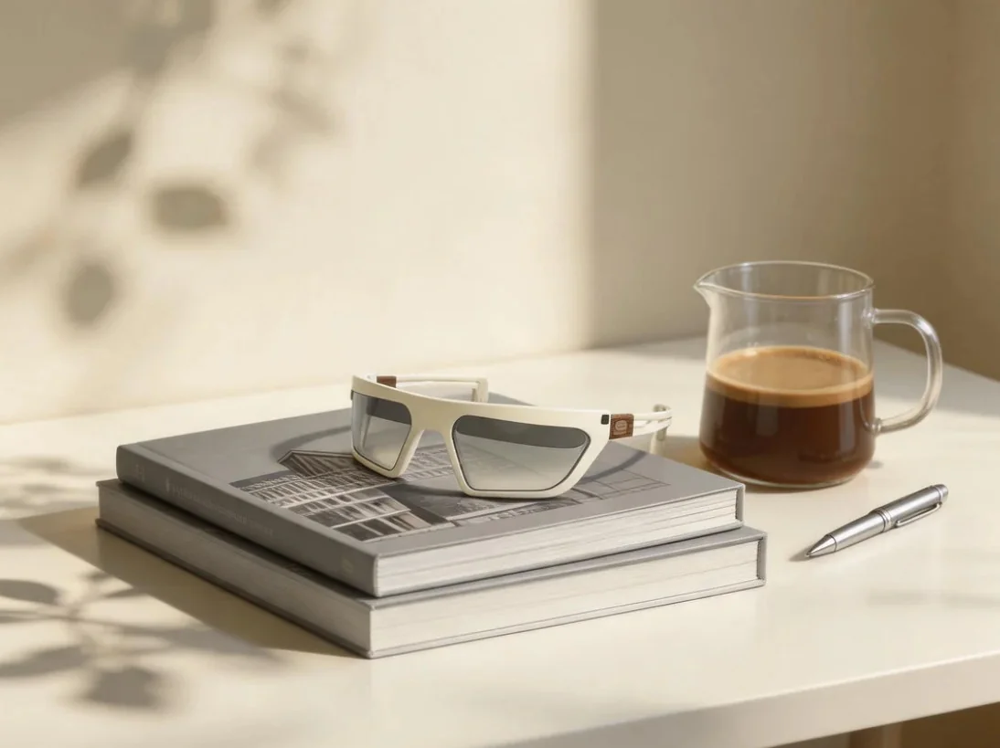
展板
把调研、结构、CMF 和渲染收进一张 A2 版面。
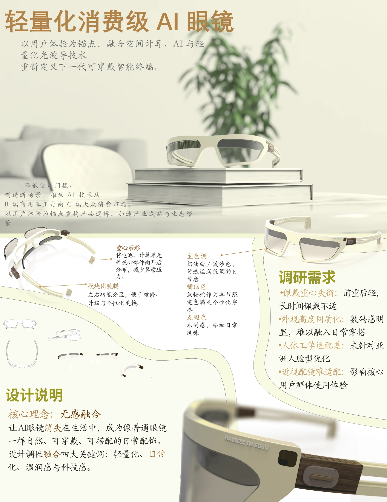
版面内容
- 01调研需求：四个核心痛点
- 02结构：重心后移 + 模块化镜腿
- 03CMF：奶油白 / 焦糖棕 / 木纹
- 04设计说明：无感融合
点开展板可以看大图，上面的尺寸和说明都能读清。
这一版下来最大的收获是：曲面在反复改尺寸的时候最容易塌。现在做新东西会先把白模和正投影过一遍，再动材质。
02渲染与场景
12 张棚拍渲染 · 3 张场景合成 · 5 张 AI 辅助
这个分类下还没有作品。
棚拍渲染是 KeyShot 直接出图；场景合成是把渲染放进真实环境（Photoshop）；AI 辅助是用 AI 生成场景，再把模型放进去——三种做法的目的都是看产品在真实语境里成不成立。
03建模与过程
挑 4 件看白模到渲染
14 件白模练习
全部先在视口里把结构、分件和比例对齐，再进渲染。
04关于
我是雷啟春，上海电机学院工业设计专业大二在读，目标是成为一名工业设计师。
教育
上海电机学院 · 工业设计 · 大二在读 · 预计 2029.6 毕业
GPA 3.66（约 85 分，专业前 10%）· CET-4 530
主修：人机工程学、计算机辅助三维设计、SolidWorks 软件应用、人工智能生成式设计、设计表现技法
项目
专为视障儿童打造的多感官发展玩具系统设计（大创竞赛项目）· 核心设计成员
结合发展心理学与人机工学，把 0–6 岁视障儿童的触觉、听觉需求转成设计语言；负责外观建模与 KeyShot 渲染，产出多套备选方案；项目已申报中国国际大学生创新大赛高教主赛道新工科类。
学生工作
辩论社社长（管理 30+ 社员，策划校级辩论赛与每周训练）· 班级考勤班长
- 熟练
- Rhino · KeyShot · Photoshop · Illustrator
- 基本掌握
- SolidWorks · Blender · Office · Codex
- 了解
- Figma · Vibecoding
- 求职方向
- 工业设计 / 产品设计（实习）
- 城市
- 上海